Konzept-Board · Station 06 · intern · 19. Oktober 2026
Man kommt am Hafen an, setzt sich auf einen der blauen Stühle unter den Platanen und bleibt sitzen; alles, was das Schlössli ausmacht, kommt an diesen einen Tisch, am Horizont des Sees.
Die Startseite ist ein Platz, kein Weg: Man kommt am Hafen von Bottighofen an, setzt sich auf einen der blauen Stühle unter den Platanen, und alles, was die Wirtschaft am Schlössli ausmacht, kommt an diesen Tisch, die Lästermeile, die Karte in vier Ländern, Moni Hubers Küche, Jonas Volperts Keller, der Abend unter der Lichterkette. Ordnung gibt der Horizont des Sees: eine Linie über die ganze Breite, an der jedes Bild mit seinem eigenen Horizont oder seiner Tischkante anlegt, so wie man es vom Stuhl aus sieht.
Vier Fotos des Hauses, jedes mit seinem eigenen Horizont auf derselben Linie: so ordnet sich die ganze Seite. Beim Hereinkommen legen sie an.
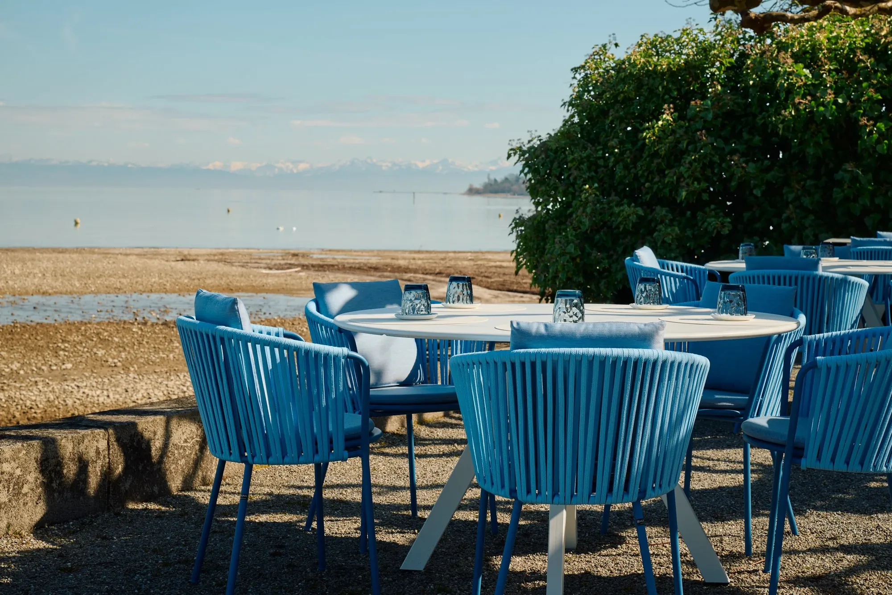
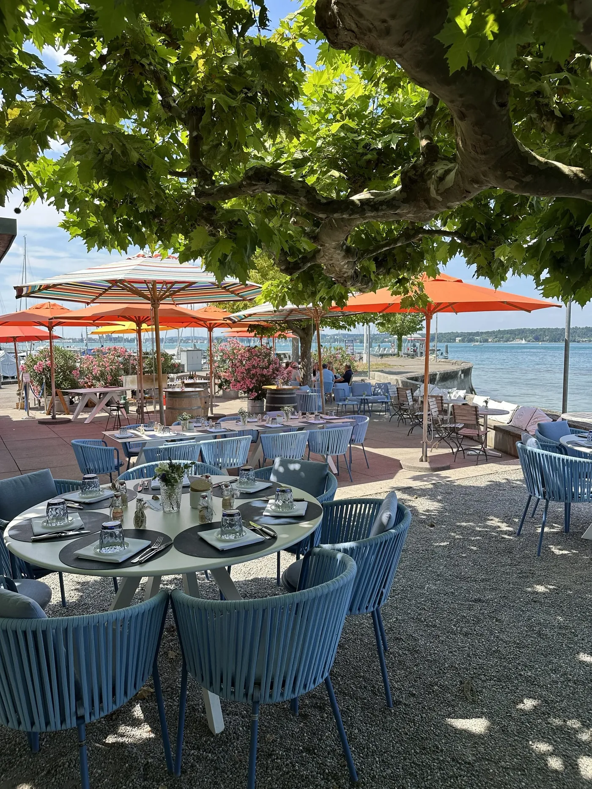
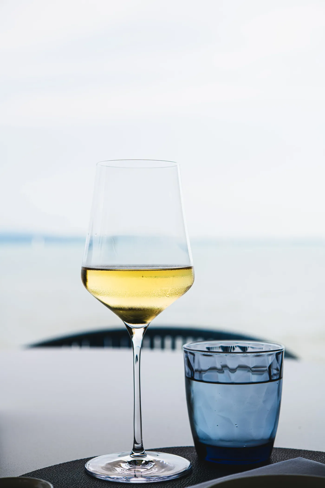
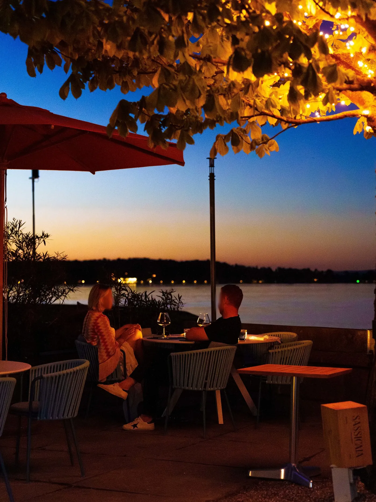
Darstellung
Aus dem Markenbuch (bestätigt 19.10.): eine feine Linie in Seehimmel läuft über die ganze Breite. Neu für die Seite: Jedes Foto wird so gesetzt, dass sein Horizont auf dieser Linie liegt, bei Tellern die Tischkante. Über der Linie liegt, was man vom Stuhl aus sieht, unter ihr, was auf dem Tisch steht. Titel sitzen mit der Grundlinie auf ihr. Kein anderes Haus ordnet seine Bilder nach dem, was in ihnen zu sehen ist.
Bewegung
Neu: Ein Bild schwebt deckend von unten herauf und kommt genau dann zur Ruhe, wenn sein Horizont die Linie erreicht, wie ein Boot an der Mole. Der Zielpunkt hängt am Bildinhalt, nicht am Rahmen. Nur transform, kein Nachfedern, zügig hinein und satt an den Platz. Die Linie selbst zieht sich nur einmal auf, im Auftakt.
«Direkt im Hafen von Bottighofen gelegen mit Blick aufs Wasser und die Alpen.» (Startseite des Hauses)
WIRTSCHAFT AM SCHLÖSSLI
Man sitzt vom ersten Blick an auf einem der blauen Stühle; der Horizont des Sees ist die erste Linie der Seite.
Kein Haus von aussen und kein Zeichen über dem Namen: der Blick vom Stuhl, der Name auf dem Horizont statt mittig im Bild.
Die Seite geht auf, das Foto zoomt von 1,06 auf 1, die Linie zieht sich einmal von links auf, der Name steigt aus der Linie wie aus einem Schlitz.
Das ganze Startfoto der heutigen Seite, ein Bildschirm hoch, nicht hineingezoomt. Die Linie verlängert den Horizont des Fotos (Alpenkante, rund 30 % von oben) über die ganze Breite. Der Name in den Versalien der Wortmarke sitzt mit seiner Grundlinie auf der Linie, darunter klein «by Christian Kuchler» und die Ortszeile. Unten die Reservation als runde Platte mit Tiefe (gastronovi, Restaurant 118851), daneben «Lunch-Menü». Nichts darunter.
Name auf dem Horizont neu
Auftakt öffnet sich von selbst; Linie scaleX einmal; Name rollt aus der Linie; Platte schwebt von unten.
Dunkel, Stuhlblau
auftakt
Einziger Auftakt ohne Gebäude und ohne Zeichen über dem Namen; der Titel steht auf dem Horizont des Fotos. Hafen am Mittag vom Tisch aus, nicht vom Wasser.
Man setzt sich. Der nächste Teil beginnt am selben Horizont, einen Schritt weiter unter den Platanen.
Christian Kuchler (Startseite). GaultMillau: «mit der Terrasse im Schatten prächtiger Platanen und Blick auf den Bodensee» (gaultmillau.ch, 19.10.2026). Michelin: «Schöne Terrasse».
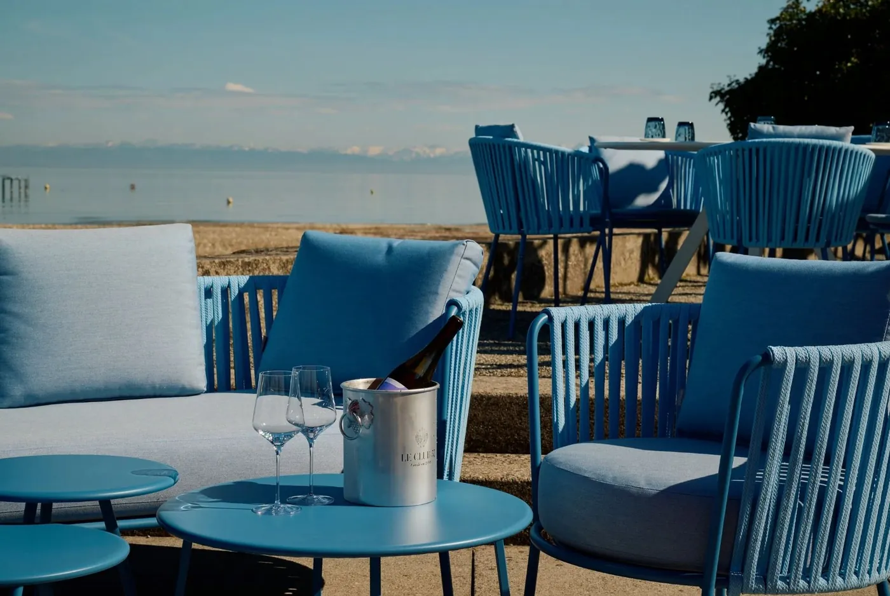
DIE SCHÖNSTE TERRASSE AM BODENSEE
Der Satz, den der Pächter selbst über sein Haus sagt, und zwei Führer, die ihm recht geben.
Begrüssung ohne Gastgeberfoto und ohne «Herzlich willkommen»: ein Zitat, das auf dem Horizont des Nachbarbilds steht.
Anlegen: das Platanenfoto steigt und setzt mit seinem Horizont auf der Linie auf; das Zitat rollt zeilenweise aus der Linie.
Links das hohe Foto unter den Platanen, so gesetzt, dass das Wasser im Bild auf der Linie liegt. Rechts sitzt der Satz des Pächters in grossen Versalien auf derselben Linie, unter ihr sein Name und zwei Stimmen von aussen als ruhige Zeilen (GaultMillau, Michelin). Darunter quer und kleiner die Lounge mit dem Champagner, bündig mit der Textspalte.
Das Zitat an der Linie neu
Anlegen; Titel aus dem Schlitz; Zeilen gestaffelt.
Hell mit Punkt-Tapete
terrasse
Der Empfang ist ein Satz des Hauses über seinen Platz, belegt von zwei Führern; kein Gastgeber-Blatt, keine Halle.
Vom Platz draussen der Blick durch die Scheiben zurück ins Haus.
«Drinnen sitzt man genauso am Wasser.» (Satz des Konzepters, zur Freigabe)
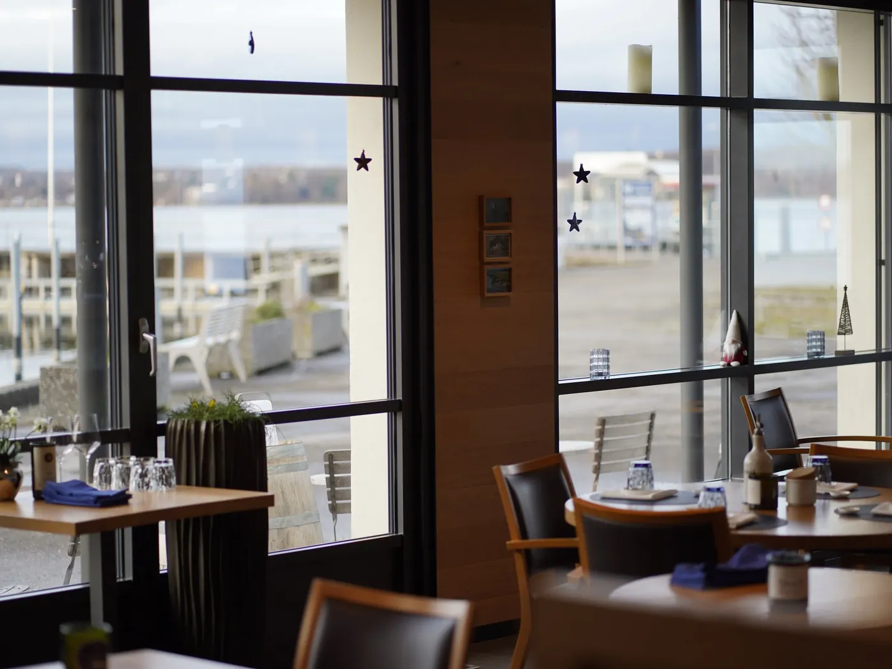
Drinnen sitzt man genauso am Wasser.
Die Gaststube hat selbst Fenster zum Hafen; das erste Fenster der Seite zeigt echte Fenster.
Fenster nach Fundus (Bild steht, Ausschnitt geht auf und zu, Satz rollt), erstes von zwei.
Der Ausschnitt öffnet sich, der Satz rollt zeilenweise.
Fenster aus dem Fundus
Fenster wie Ruedihus und Gasterntal festgelegt.
Dunkel, Stuhlblau
fenster-hafen
Wendepunkt von draussen nach drinnen; Bild und Satz gehören nur diesem Haus.
Drinnen steht man an der Bar, die nach draussen führt.
«Tapas durchgehend» (Karte der Lästermeile, PDF vom 14.10.2026). Die Bar, «die von drinnen nach draussen führt» (Tagblatt, 24.04.2025).
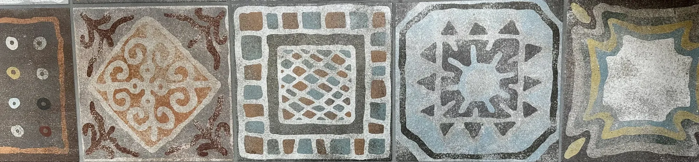
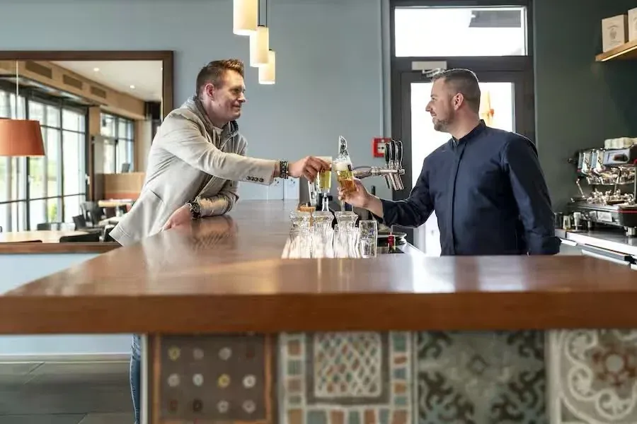
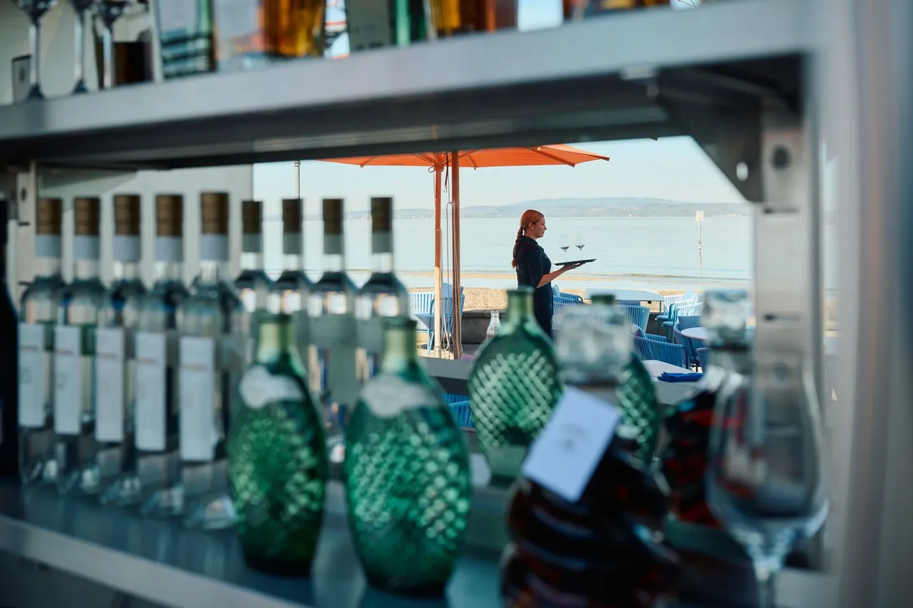
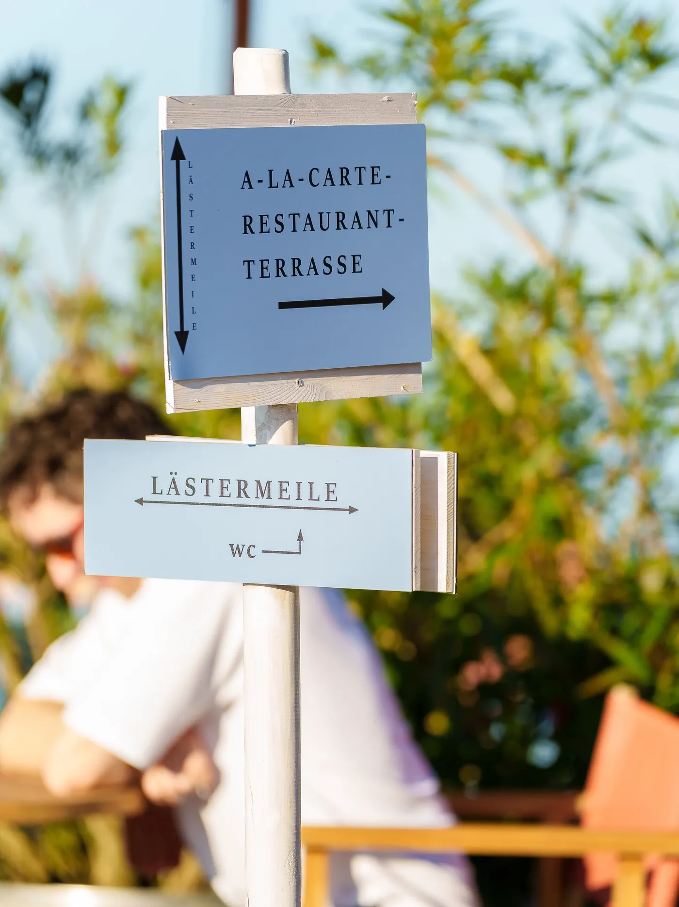
Eine Bar, die durch die Wand nach draussen läuft, auf alten Zementfliesen; der Boden ist der Übergang.
Ein Teil, der hart in dunkel und hell geteilt ist und von einem echten Fliesenband zusammengehalten wird; kein anderes Haus teilt einen Abschnitt in drinnen und draussen.
Das Fliesenband liegt still, die Bilder drinnen und draussen steigen in einem Zug darauf; die Tapas-Zeilen schweben gestaffelt.
Hier wird die Linie zum Boden: das echte Fliesenband der Bar läuft als Streifen über die ganze Breite. Die linke Hälfte ist dunkel (drinnen): die Bar mit den Fliesen und das Regal mit Blick auf den See. Die rechte Hälfte ist hell (draussen): das Schild «Lästermeile» unter den Bäumen und die Tapas wörtlich aus der Karte (Pimientos de Padrón 8, Patatine fritte 8, Croquetas 9, Kalamata Oliven 8; «Zur Stärkung & Süsses»: Prato 30, Tarte flambée 20, Crespelle 20, Tarta 7, Dolce al cucchiaio 9). Die Bilder stehen auf den Fliesen.
Die Schwelle neu
Gruppe als Ganzes von unten; Zeilen gestaffelt; Fotos zoomen im Rahmen.
Dunkel und hell geteilt
laestermeile
Die Bar als Durchgang von drinnen nach draussen über einem echten Fliesenband. Das Schild ist ein Foto des Hauses, kein gebauter Wegweiser.
Von den Tapas an der Bar zur Karte des Hauses.
«Hier erwartet Sie eine kulinarische Reise in die Welt der mediterranen Küche» (Startseite). Karte vom 30.09.2026: Frankreich, Italien, Iberische Halbinsel, Klassiker.
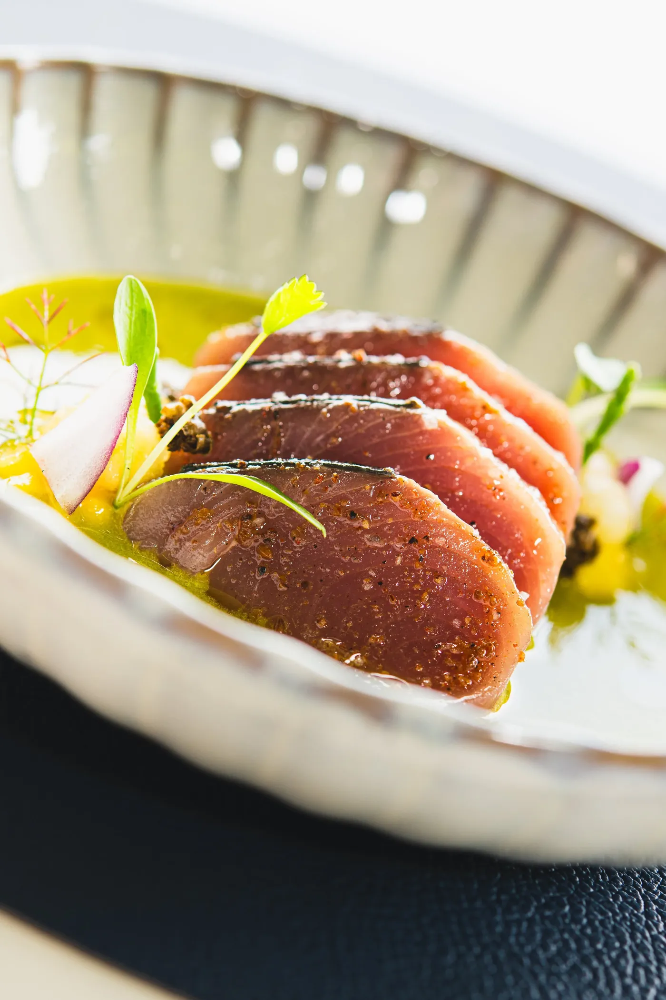
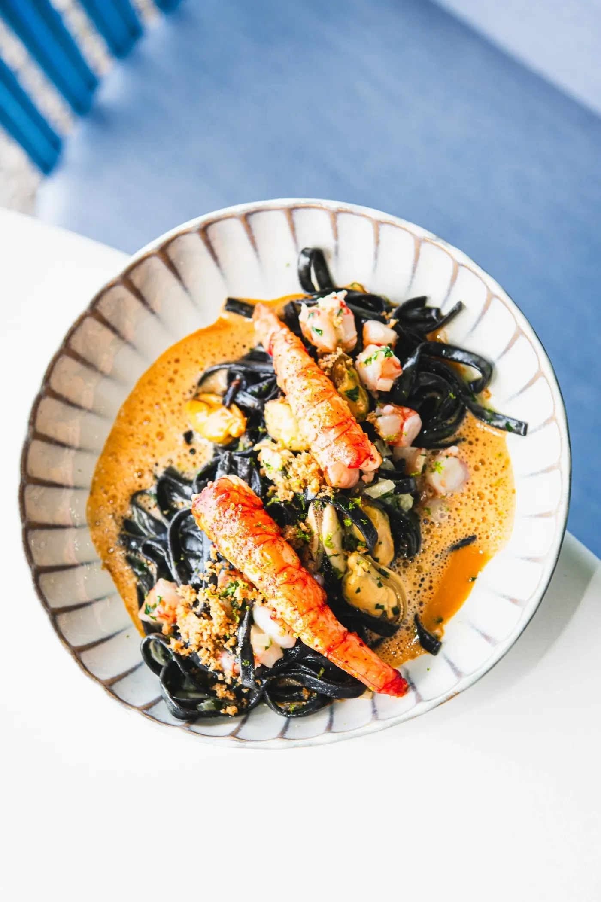
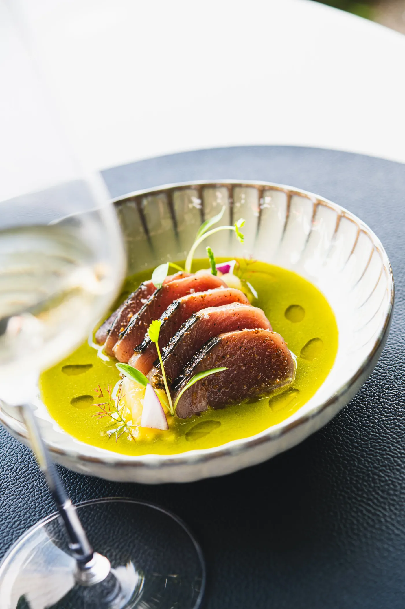
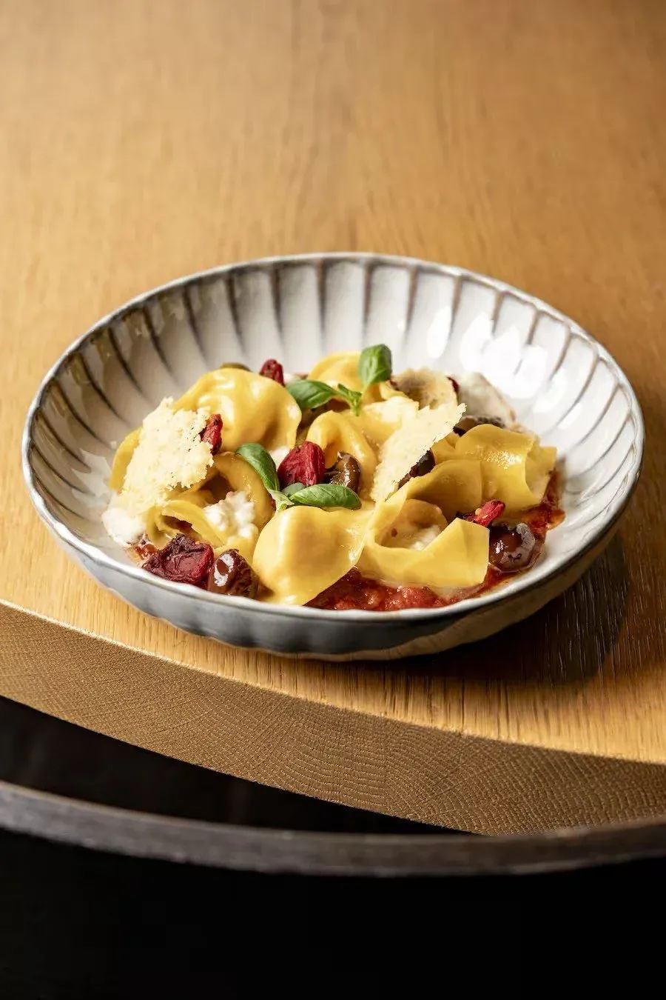
Die Karte des Hauses ist nach Ländern geordnet; vom Bodensee aus liegt das Mittelmeer als Küste am Horizont.
Vier Teller in ungleicher Höhe auf einer gemeinsamen Linie, darunter die Karte als Zeilen je Land; keine Mappe, kein Blatt, kein Reiter.
Anlegen in einem Zug von links nach rechts: jeder Teller setzt mit seiner Tischkante auf der Linie auf.
Vier Teller-Fotos stehen auf der Linie, verschieden hoch, wie eine Küste vom Wasser aus. Unter der Linie je Land der Name in Versalien und seine Gerichte wörtlich aus der Karte, Preis in DM Mono (aus La Carte, eine Quelle für Seite und PDF). Unter allen vier eine Zeile für den Mittag: «Lunch-Menü», drei Gänge, 35 Franken, mit dem Menü der Woche (PDF vom 18.10.2026: Kürbissuppe, Risi e bisi, Joghurt Panna Cotta). Die Fotos tragen keine Gerichtsnamen (siehe offen). Am Handy je Land Foto, Linie, Zeilen untereinander.
Die Küstenlinie neu
Anlegen gestaffelt in einem Zug; Zeilen schweben; Preise stehen still.
Hell mit Punkt-Tapete
karte
Die Karte als Küste: Länder nebeneinander an einer Linie, nicht als Erkunder, Papierblatt oder Rennverlauf.
Wer so kocht: die Köchin und ihr Team.
GaultMillau über Moni Huber: «beeindruckt mit exzellentem Handwerk und klarer kulinarischer Sprache» (gaultmillau.ch, 19.10.2026).
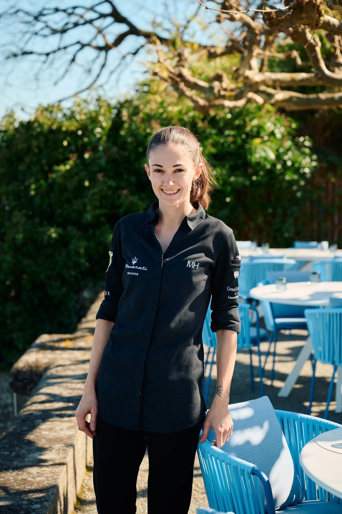
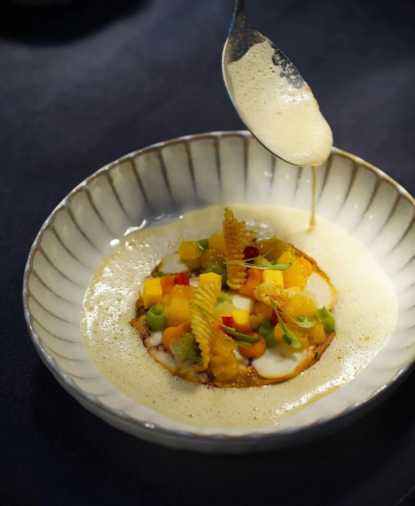
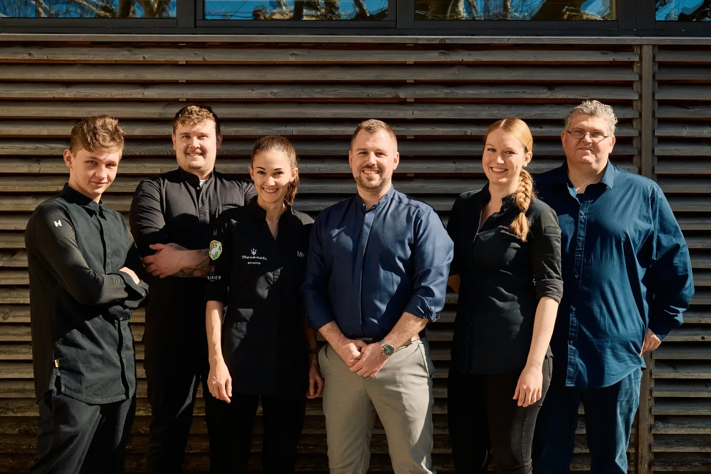
Die Auszeichnung fehlt heute auf der ganzen Seite (Analyse, Befund 01); hier ist sie der Titel und gehört der Köchin.
Porträt über der Linie, Weg und Auszeichnungen unter ihr, das Team als breiter Abschluss; keine Zahlenreihe, keine Felder, keine Medaillons.
Der Titel steigt aus der Linie, das Porträt legt an; die Zeile der Auszeichnungen steht still, nichts zählt hoch.
Der Titel ist die Auszeichnung selbst, zwei Zeilen auf der Linie. Über der Linie rechts Moni Huber hoch im Porträt. Unter der Linie ihr Weg in einem Satz (Südtirolerin, Vila Joya bei Dieter Koschina, Sous-Chefin von Christian Kuchler im Schäfli, seit April 2025 eigene Küche am See) und die drei Auszeichnungen als ruhige Zeile: GaultMillau 15 Punkte · Falstaff 91 von 100 · Guide Michelin, «Favorit der Inspektoren». Daneben das Foto, in dem die Sauce angegossen wird. Zum Schluss das Team quer über die Breite: «junges Küchenteam … frischen Wind» (Startseite).
Die Auszeichnung als Titel neu
Titel aus dem Schlitz; Porträt legt an; Team schwebt als Ganzes.
Dunkel, Stuhlblau
kueche
Auszeichnungen nicht als eigener Teil am Ende, sondern als Titel des Kapitels über die Köchin.
Zum Essen der Wein: von der Küche zum Gastgeber.
GaultMillau: «Der Weinkeller, bei vielen neuen Lokalen das Sorgenkind, ist im ‹Schlössli› bestens bestückt.» (30.03.2025). Weinkarte mit 26 Seiten, Stand 14.10.2026.
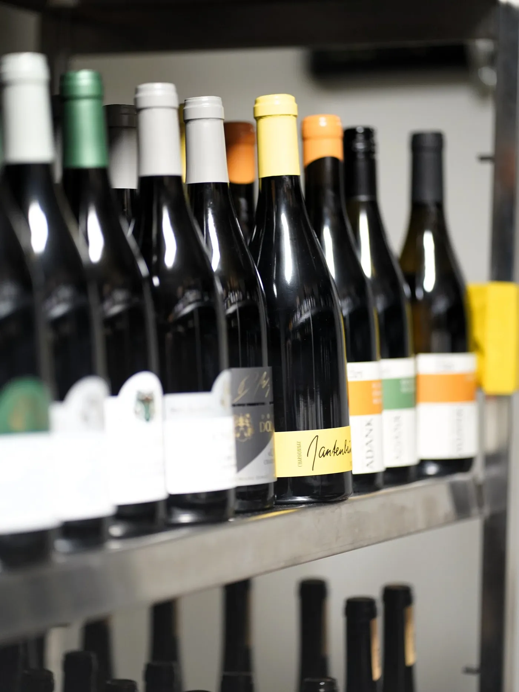
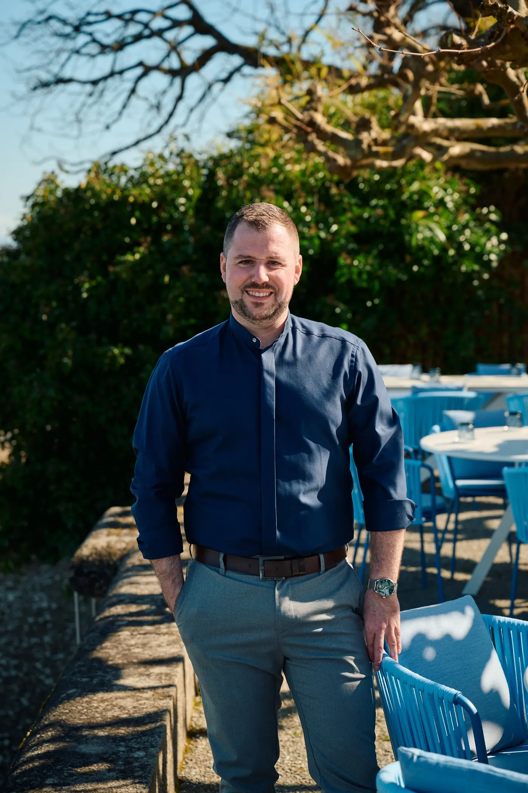
Ein Glas Weisswein vor dem Wasser: das Foto des Hauses, in dem Horizont und Tisch dieselbe Linie sind.
Ein grosses Bild in der Mitte, dessen Horizont die Seitenlinie fortsetzt; zwei kleinere Bilder daneben, die mit der Unterkante anlegen.
Das deutlichste Anlegen der Seite: das Glas steigt, bis der See im Bild auf der Linie liegt.
In der Mitte gross das Weinglas vor dem See: sein Horizont liegt genau auf der Linie der Seite, so dass das Glas auf dem Bodensee zu stehen scheint. Links das Regal, rechts Jonas Volpert im Porträt, beide kleiner. Unter der Linie der Satz von GaultMillau, darunter der Knopf «Weinkarte» (eigene Seite statt 26 Seiten PDF).
Das Glas auf dem Horizont neu
Anlegen; Foto zoomt im Rahmen; Zeilen gestaffelt.
Hell, Seehimmel
keller
Wein als ein Glas am Horizont, kein Keller mit Kerzen, keine Weinkarten-Zeile neben einer Bildgruppe.
Das Glas ist leer, der Himmel wird blau.
«Wenn es Abend wird am Hafen.» (Satz des Konzepters, zur Freigabe)
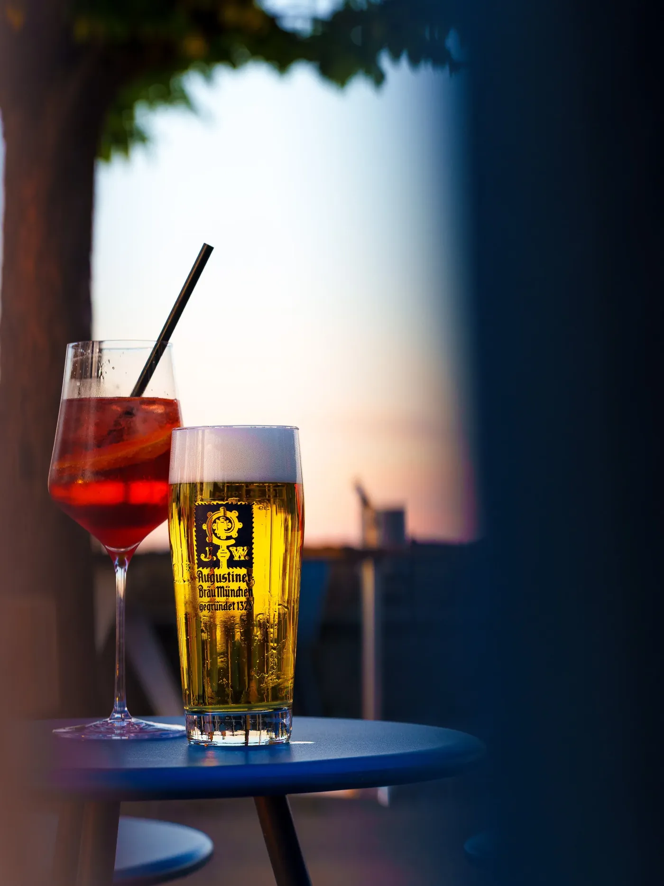
Wenn es Abend wird am Hafen.
Apéro in der blauen Stunde: der Wendepunkt vom Tag zum Abend.
Fenster nach Fundus, zweites und letztes der Startseite.
Der Ausschnitt öffnet sich, der Satz rollt.
Fenster aus dem Fundus
Fenster wie festgelegt.
Dunkel, Stuhlblau
fenster-abend
Bild und Satz gehören nur diesem Haus.
Am Abend die Geschichte, die der Ort schon kennt.
Gemeindeschrift «Die Bottighofer Mühlen und das Schlössli am See», Gemeinde Bottighofen 1994, PDF-Seiten 110–111.
Statt eines Wirtshausschilds hing nur ein Besen heraus.
Die Geschichte des Ortes mit Augenzwinkern: ein Pächter am See, ein Besen statt eines Schilds, und die Sorge der Gemeinde ums Hochzeitsessen.
Nur Schrift an der Linie, auf heller Tapete; keine Jahreslinie, keine Archivbilder.
Die drei Sätze rollen nacheinander aus der Linie; sonst steht alles.
Ein kurzer Teil ohne Bild, gesetzt wie eine Fussnote, aber gross: die Linie, darunter in der Laufschrift drei Sätze. Gleich nebenan, im Haus am See, das heute Schlössli heisst, setzte Hans Conrad Hafen Ende des 17. Jahrhunderts einen Wirt als Pächter ein, der die Schiffsleute mit Speis und Trank bewirtete. Statt eines Wirtshausschilds hing nur ein Besen heraus. Das Kloster Münsterlingen klagte, die Gemeinde fürchtete, man müsse bald im Wirtshaus Hochzeit feiern statt zu Hause, und 1699 blieb nur noch Wein aus Eigenbau. Darunter die Quelle in DM Mono. Der letzte Satz leitet zum Feiern über.
Die Fussnote neu
Zeilen aus dem Schlitz.
Hell mit Punkt-Tapete
besen
Geschichte als Anekdote in drei Sätzen, die zum Feiern überleitet; das Haus selbst ist nicht das Schlössli, das wird gesagt.
Die Gemeinde fürchtete das Hochzeitsessen im Wirtshaus; heute feiert man hier gern.
«Sie geben den Rahmen vor – ob Tavolata oder gesetztes Menue!» (Seite «Karten»). Bankettmenüs Frühling 175, Sommer 185, Herbst 175 (PDF vom 29.04.2025).
26
26
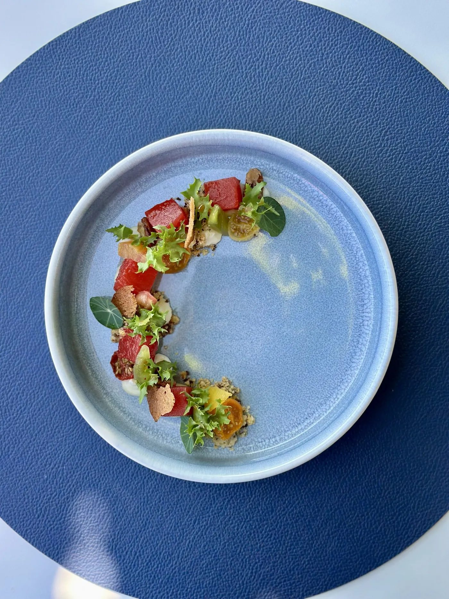
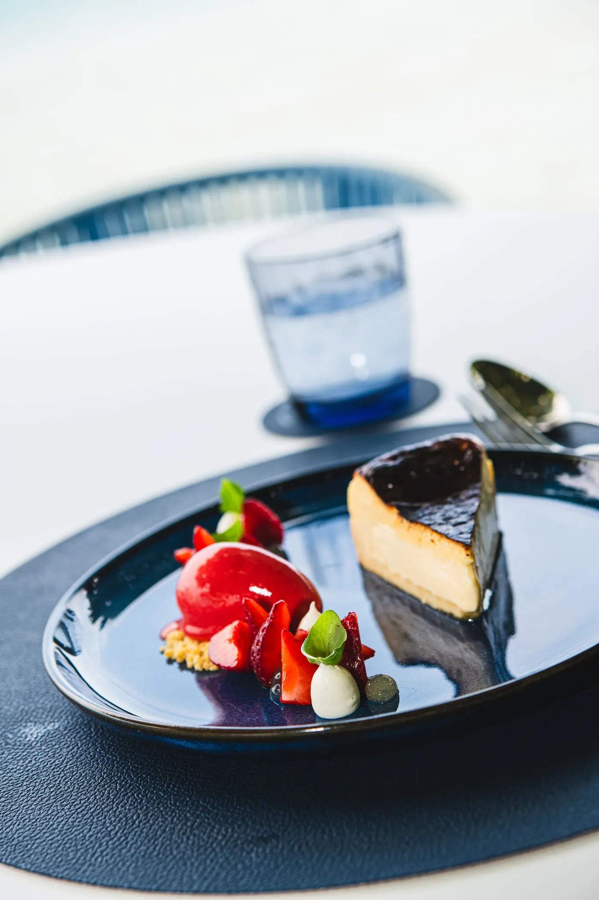
Das Haus hat zwei Etagen gleicher Grösse; die eine Linie der Seite wird hier zu zweien.
Zwei Linien statt Bildreihen oder Zahlenband; die Zahl steht einmal je Etage.
Wenn der Teil den Rand berührt, legt sich die zweite Linie unter die erste; die Teller legen an.
Die Linie doppelt sich: zwei Linien übereinander wie die zwei Etagen, auf jeder steht still «26». Zwischen den Linien die Wahl des Hauses als zwei Knöpfe: Tavolata, gesetztes Menü. Rechts zwei Teller auf der unteren Linie. Die Anfrage öffnet ein Fenster auf der Seite mit den Feldern, die das Haus heute in seiner Mail vorgibt: Datum, Uhrzeit, Personenzahl, Speisenform, Anzahl Gänge, Richt-Budget. Fotos der Etagen fehlen (offen).
Zwei Linien neu
Eine Linie zieht sich auf (scaleX, einmal); Anlegen; Knöpfe geben beim Drücken nach.
Dunkel, Stuhlblau
feiern
Säle ohne Bild-Bühne: die zwei Etagen als zwei Linien, die Anfrage mit den Feldern des Hauses.
Nach dem Fest bleibt der Abend am See.
Donnerstag bis Montag 11:30 bis 23:00, Küche 11:30 bis 13:30 und 18:00 bis 20:00, die Karte der Lästermeile durchgehend; Dienstag und Mittwoch Ruhetag (Kontakt, 19.10.2026).
RESERVATION · DONNERSTAG BIS MONTAG
Derselbe Platz wie am Anfang, am Abend: der Faden schliesst sich am Horizont.
Ein hohes Bild, aus dessen Horizont die Linie mit Reservation und Zeiten herausläuft; nicht die Form des Auftakts.
Das Abendbild legt an; Platte und Zeilen schweben gestaffelt.
Rechts hoch das Abendfoto unter der Platane mit der Lichterkette; sein Horizont liegt auf derselben Linie wie im Auftakt, nur das Licht ist anders. Die Linie läuft aus dem Bild nach links; auf ihr die zweite Reservation als Platte, darunter Zeiten, Ferien (aus La Maison), Seestrasse 50 mit Parkplatz und Bahnhof Bottighofen, Knopf «Gutschein». Der Gutschein öffnet ein Fenster auf der Seite.
Der letzte Blick neu
Anlegen; Platte von unten; Zeilen gestaffelt.
Hell, Seehimmel
abend
Der Schluss kehrt an den Ort des Anfangs zurück, über die gemeinsame Linie, ohne Karte, Ticket oder Lageplan.
Unten die Adresse, die Familie, das Zeichen.
Seestrasse 50, 8598 Bottighofen · +41 71 688 90 92 · kontakt@schloessli-bottighofen.ch · Instagram @schloessli_bottighofen.
Die Familie ist eine Zeile, keine Kartenreihe; das Schäfli bleibt eigenständig.
Fuss nach Fundus, Familie als Satz mit Link.
Die Wortmarke baut sich einmal auf; sonst ruhig.
Dunkel mit der Punkt-Tapete, die Zeiger als Zeichen, Wortmarke, Adresse, Zeiten, Rechtstexte. Eine einzige Zeile zur Familie: «Die Schwester in Wigoltingen: Taverne zum Schäfli» mit Link, wie das Haus es heute auf «Kontakt» hält.
Fuss mit Familienzeile aus dem Fundus
Ruhig.
Dunkel, Stuhlblau
fuss
Keine Karten der Häuser; ein Satz zur Schwester.
Alles, was das Haus heute hat (Seitenliste des Spähers), neu gedacht; Karten als Seiten statt PDF, Anfragen im Fenster statt im Mailprogramm, Reservation über gastronovi bleibt. Kein Klick führt ins alte Design. Jede Unterseite beginnt mit einem Seitenkopf auf der Linie.
karte.html
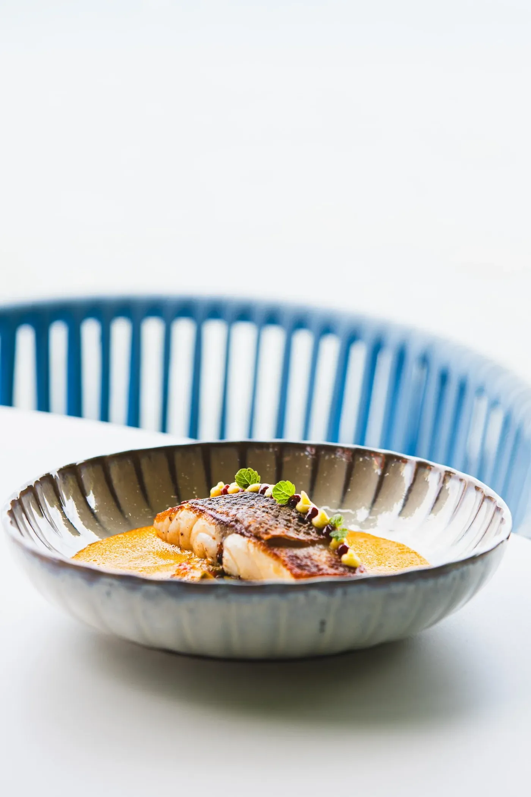
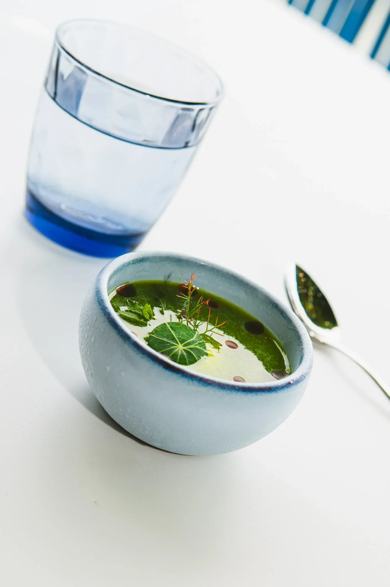
weinkarte.html
feiern.html
anlaesse.html
team.html
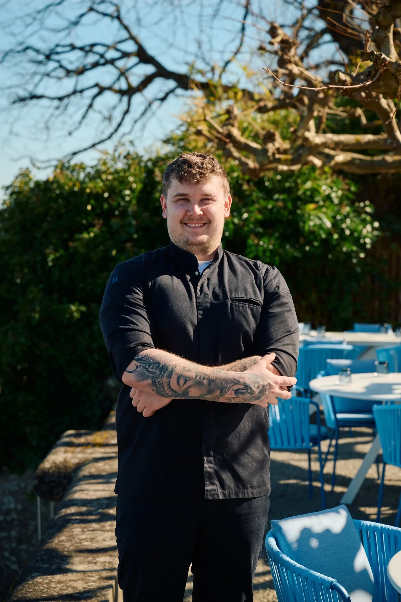
kontakt.html
gutschein.html
impressum.html · datenschutz.html · agb.html
Überlegt und verworfen, damit es kein anderer Chat wieder aufmacht.
Was nicht belegt ist oder fehlt; steht auch auf der Karte unter Station 06.